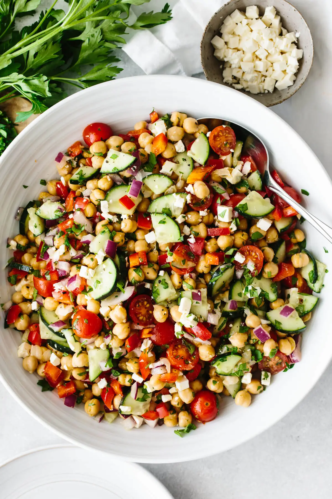

Chickpea salad

Description
Mediterranean chickpea salad is the ultimate summer salad. Chickpeas are tossed with fresh tomatoes, crisp cucumber, bell pepper, red onion, feta, parsley, and a bright lemon vinaigrette.
Bonus – it’s light enough for an easy lunch yet hearty enough for a dinner side dish.
Ingredients
- 2 15-ounce cans chickpeas, drained and rinsed
- 1 large cucumber, diced
- 1 red bell pepper, diced
- 298 g cherry tomatoes, halved
- 40 g red onion, diced
- 113.4 g feta cheese, crumbled
- 15 g finely chopped parsley
- lemon vinaigrette, you can use as much or as little as you'd like
Steps
- Add. Toss all of the ingredients into a large mixing bowl.
- Stir. Pour the lemon vinaigrette over the salad and give it a gentle stir until well combined.